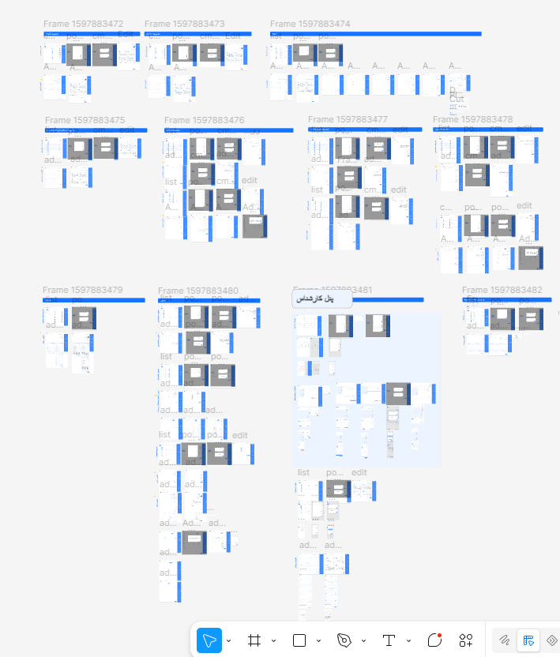
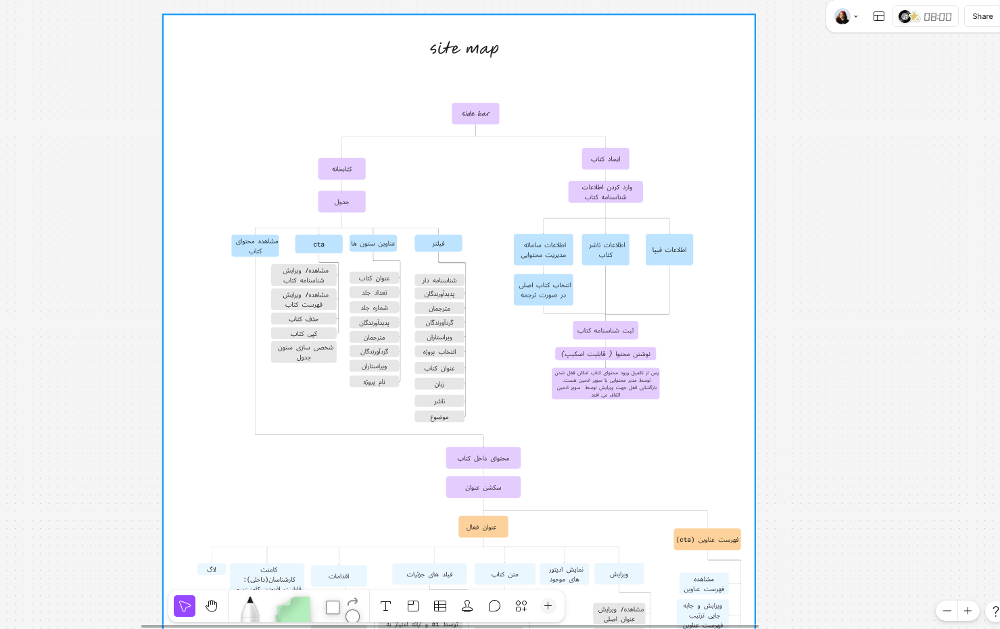
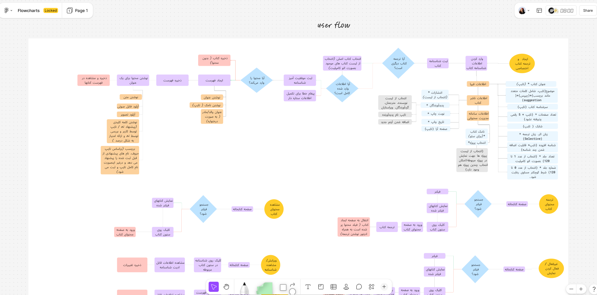
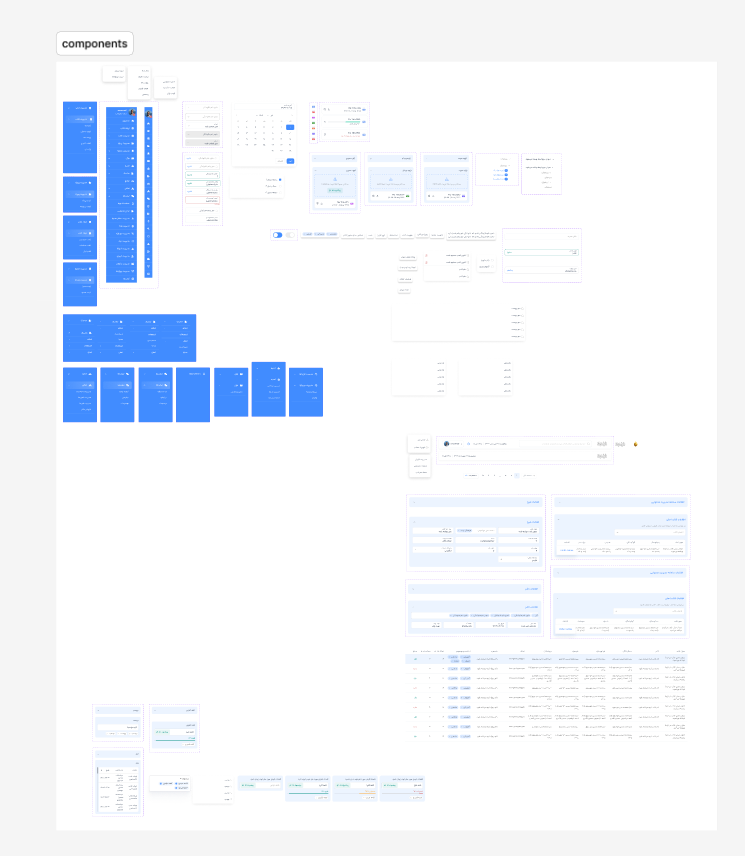
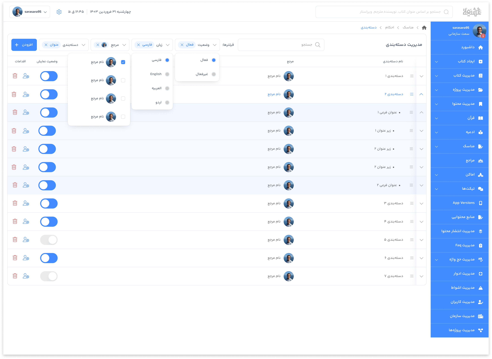
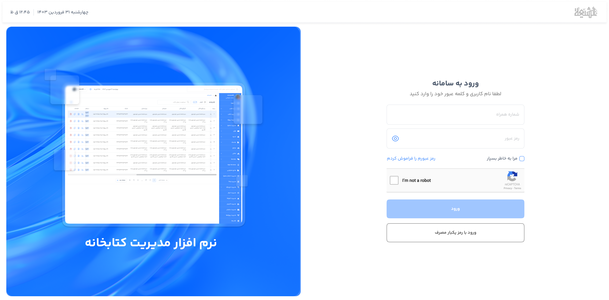
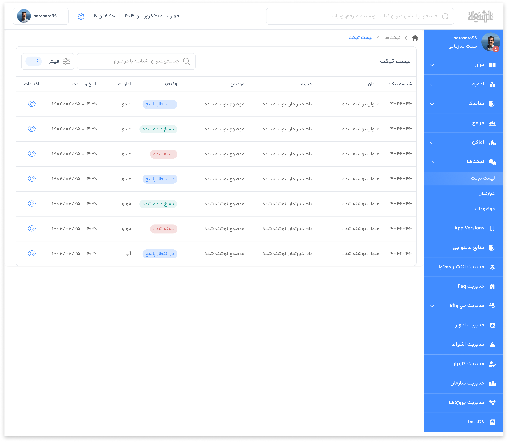
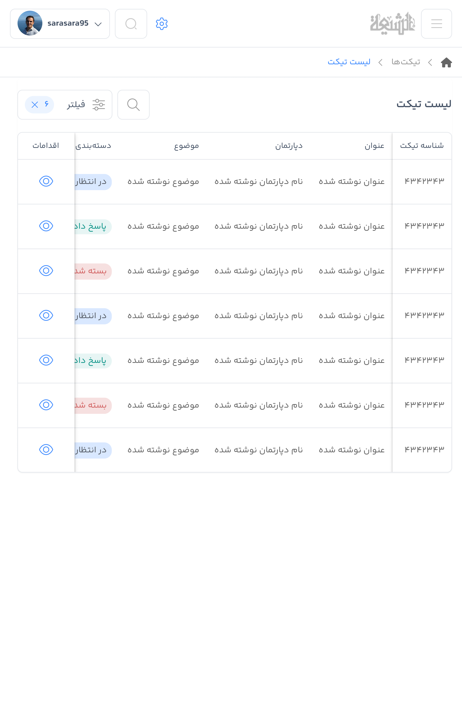
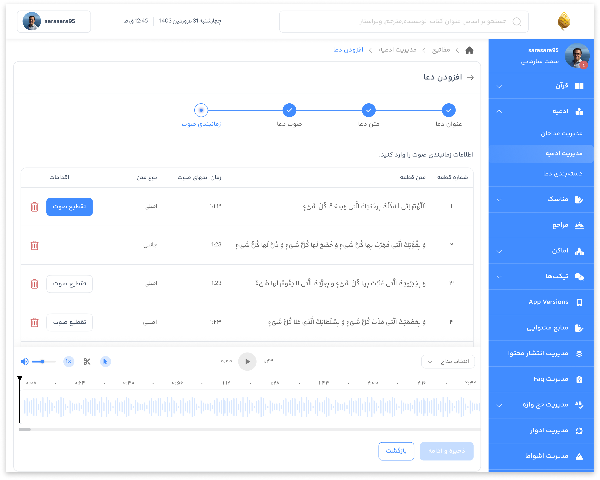

CASE STUDY / 04 · 2024–2025
NovinParva
CMS
One control centre for the apps and content NovinParva builds.

01 / OVERVIEW
A CMS for a growing product family.
NovinParva needed one responsive content-management panel for the applications it builds. The CMS currently manages two existing applications and their content in one place. I designed the product end to end, from the system model and flows to the interface, component system, and style guide.
- My role
- Product Designer
UI/UX Designer - Ownership
- Site map, flow charts, user flows, responsive UI, design system, component system, and style guide.
- Company
- NovinParva
Full-time · On-site - Timeline
- 2024 — 2025
~1 year with iterations
02 / THE CHALLENGE
Many products, one mental model.
Each application has its own content types and editorial needs, but the people managing them need a predictable way to move between products, organise content, and publish changes. The challenge was to create a flexible foundation without making everyday work feel like system administration.
03 / DESIGN PROCESS
Model once, scale across apps
I mapped the product family and its content relationships first, then detailed the scenarios that editors repeat most. The interface and component system were built from those shared rules and checked across both application workflows.
- 01 Product and content audit
- 02 System map
- 03 Site map
- 04 User flows
- 05 Component system
- 06 Responsive UI
- 07 Style guide
- 08 Iteration and handoff
01 / SYSTEM SCOPE
A shared foundation for two applications
I clarified which areas belong to the CMS foundation and which are product-specific, so both existing applications could reuse the same navigation and management patterns.


02 / USER FLOWS
Clear routes for editorial work
I mapped the scenarios editors use to create, translate, filter, review, and publish content. The flows make dependencies visible while keeping the main path short.

03 / COMPONENT SYSTEM
Reusable rules, not isolated screens
I created the component system and style guide for the CMS: navigation, filters, tables, cards, forms, editor states, and feedback patterns. Shared components made the responsive layouts consistent across products.


04 / RESPONSIVE UI
Designed for the work surface
I designed the responsive UI from sign-in to editing, metadata, media, and status feedback. Related screens share the same spacing, hierarchy, and component rules across both applications.




05 / OPERATIONS
From content to release
Creation, review, status, and publishing stay visible so editors know what is ready, what needs attention, and what has shipped.
04 / OUTCOME
A flexible CMS with a consistent core.
The final system gives NovinParva one place to manage its two existing applications while leaving room for future products. Shared navigation, components, and content patterns reduce repetition without forcing every product into the same mould.
The responsive design and documented style guide also give the team a reliable foundation for extending the CMS.
05 / REFLECTION
Scale starts with structure.
This project reinforced how a clear model, site map, and flow can turn a multi-product CMS into a calm daily workspace. The design system carried that clarity from the first screen to every new component.